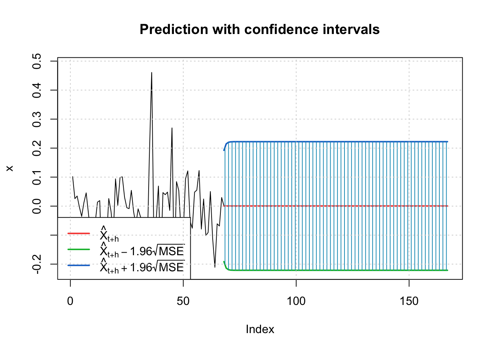
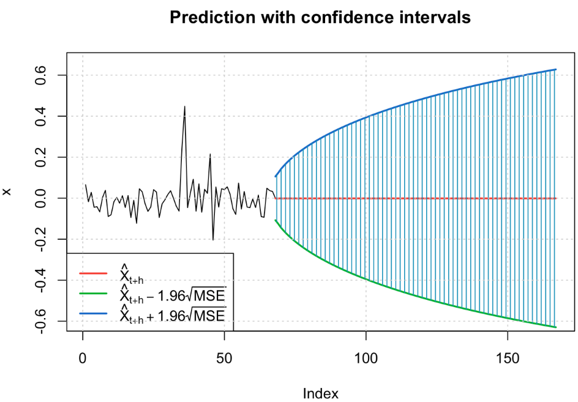

Financial Time Series Models (ARCH/GARCH)
In this section, we evaluate the application of Autoregressive Conditional Heteroskedasticity (ARCH) and Generalized Autoregressive Conditional Heteroskedasticity (GARCH) models. These models are commonly used in finance to capture changing volatility over time in a time series.
For each analysis, we will model and predict the volatility of future returns. Volatility is a measure of the dispersion of returns on a given market index. We will evaluate the application of the models by analyzing stationarity and volatility by using ACF plots and the Augmented Dickey-Fuller Test. We apply decomposition and differencing methods to make the data stationary when necessary. Where appropriate, we evaluate the model parameters and auto.arima() results using model diagnostics to obtain the best ARIMA model. The model residuals are plotted using ACF and PACF to determine the possible parameters for ARCH and GARCH models. Once the best model is obtained, the forecast is plotted.
To assess the impact of oil price and production fluctuations on the manufacturing sector, we will use food production and the healthcare index.
Below are the libraries used in this section:
Libraries
library(tidyverse)
library(ggplot2)
library(forecast)
library(astsa)
library(xts)
library(tseries)
library(fpp2)
library(fma)
library(lubridate)
library(TSstudio)
library(quantmod)
library(tidyquant)
library(plotly)
library(gridExtra)
library(readxl)
library(imputeTS)
library(zoo)
library(knitr)
library(kableExtra)
library(patchwork)
library(vars)
library(dplyr)
library(car)
library(fGarch)Food Index ~ Oil Price + Oil Production
Our examination of the food industry data revealed that the oil price variable is not significant in the context of the linear model. The full details of this analysis, including the steps taken, can be found in the section ARIMA + GARCH Model | Food Industry. Looking at the forecast plot, it is clear that the forecasts suggest a scenario without significant fluctuations. While this may seem contradictory given the inherent variability of the stock market, it underscores the importance of viewing this analysis as an estimate, with predicted values likely to fall within the confidence intervals.

Healthcare Index ~ Oil Price + Oil Production
In our second approach, we shift our focus to the healthcare industry and specifically select one of the most important companies within the healthcare index. The visualized predictions below offer a glimpse into the potential future, suggesting a landscape characterized by notable fluctuations, as reflected by the widening confidence intervals. Despite the fluctuations, the estimated values remain constant and show no trend. For a full understanding of the steps taken to arrive at this model, please refer to the detailed analysis in the section ARIMA + GARCH Model.
